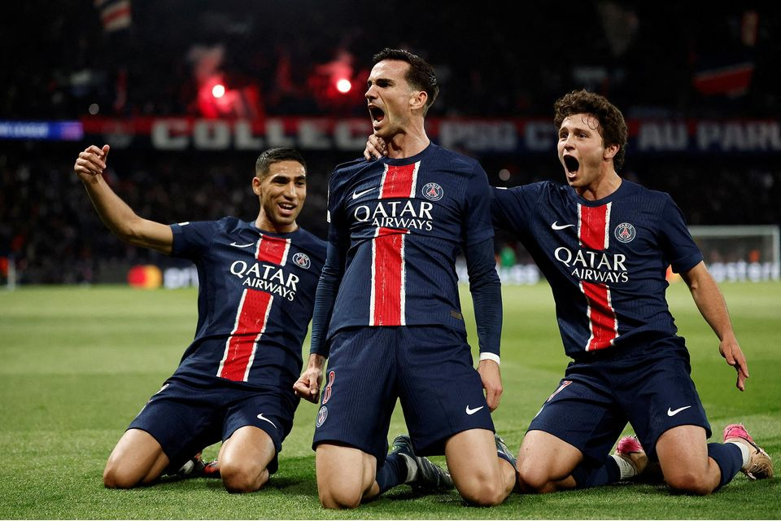

Paris, surnommée la "Ville Lumière", est la capitale et la plus grande (et la plus belle) ville de France. Avec ses 2,2 millions d'habitants intra-muros et plus de 12 millions dans son aire urbaine, Paris est l'une des métropoles les plus influentes au monde. Centre politique, économique et culturel de la France, elle rayonne depuis des siècles par son art de vivre, sa gastronomie et son patrimoine architectural exceptionnel.
Paris incarne l'art de vivre à la française : ses boulevards haussmanniens, ses cafés emblématiques, ses musées prestigieux et sa haute couture en font une destination incontournable pour les amoureux de culture et de beauté.
Symbole de Paris et de la France, cette tour de fer de 324 mètres de haut accueille plus de 7 millions de visiteurs par an. Construite pour l'Exposition universelle de 1889, elle offre une vue imprenable sur toute la capitale.
Le plus grand musée d'art au monde abrite des chefs-d'œuvre comme la Joconde et la Vénus de Milo. Ancien palais royal, il compte plus de 35 000 œuvres exposées dans ses galeries prestigieuses.
Chef-d'œuvre de l'architecture gothique, cette cathédrale millénaire fascine par ses voûtes, ses vitraux et ses gargouilles. Actuellement tout juste réouverte après l'incendie de 2019.
La plus belle avenue du monde s'étend de la Place de la Concorde à l'Arc de Triomphe. Théâtre du défilé du 14 juillet et destination shopping de luxe, elle symbolise l'art de vivre parisien.
Cœur intellectuel de Paris depuis le Moyen Âge, ce quartier abrite la Sorbonne, le Panthéon et de nombreux cafés littéraires. Ses ruelles pavées respirent l'histoire et la culture.
Perché sur sa butte, ce quartier bohème a inspiré les plus grands artistes. Du Sacré-Cœur à la Place du Tertre, en passant par le Moulin Rouge, il conserve son âme d'antan.
2,2 millions d'habitants • 105 km² de superficie • 20 arrondissements • 40 000 monuments historiques classés • 50 millions de touristes par an • 1er destination touristique mondiale • 1er club de foot de Ligue1
Comment faire un site sur Paris sans parler du travail de notre chère maire sur le développement durable ? Entre le périph à 50km/h ou les pistes cyclables qui se multiplient dans la capitale, paris est une ville engagée dans la cause climatique.
Paris compte plus de 130 restaurants étoilés au Michelin. De la haute gastronomie aux bistrots traditionnels, la capitale offre une expérience culinaire incomparable, berceau de la cuisine française.
Avec plus de 100 théâtres, 150 musées et de nombreuses salles de concert, Paris vibre au rythme de la création artistique. L'Opéra de Paris et la Comédie-Française rayonnent mondialement.
Capitale mondiale de la mode, Paris accueille les plus grandes maisons de couture. De la rue Saint-Honoré aux Galeries Lafayette, la ville dicte les tendances planétaires.
Comment parler de la capitale française sans évoquer le PSG ?! Ce club, tout juste sacré cchampion d'Europe à l'heure de publication de ce site, surdomine le championat français et explose l'OM à chaque classico. ON L'A FAIT, ON EST CHAMPIONS D'EUROPES !!
